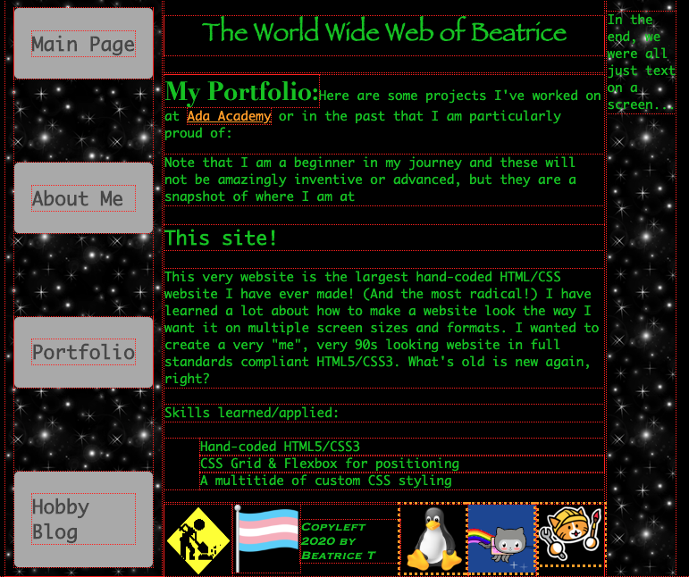

This very website is the largest hand-coded HTML/CSS website I have ever made! (And the most radical!) I have learned a lot about
how to make a website look the way I want it on multiple screen sizes and formats. I wanted to create a very "me", very 90s looking website
in full standards compliant HTML5/CSS3. What's old is new again, right?
